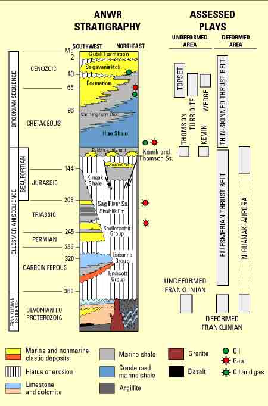

Figure 2. Stratigraphic Summary of Ages, Names and Rock Types in the ANWR 1002 and Coastal Plain Area of the Alaska North Slope. Potentially Productive Reservoirs and Plays Assessed by the USGS are Indicated |
|  |
| Source: Edited from U.S. Geological Survey, "The Oil and Gas Resource Potential of the Arctic National Wildlife Refuge 1002 Area, Alaska," Open File Report 98-34, 1999. |
Return to the 1. Overview of the Arctic National Wildlife Refuge.